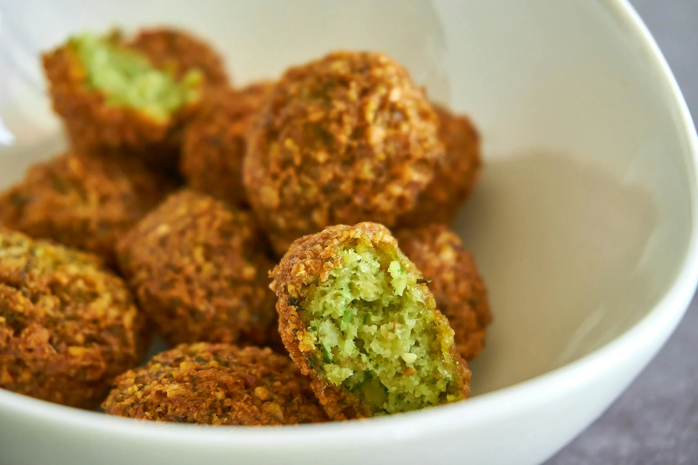

Recipe Library
Filter on diets
Sort on time
Placeholder for filter/sorting options

Placeholder recipe
Diet:
Vegan
Cooking Time:
30min
Ingredientes
- Dried chickpeas
- Onion and garlic
- Herbs like parsley, cilantro
- Spices like cummin, coriander
- Sesame seeds as a bonus